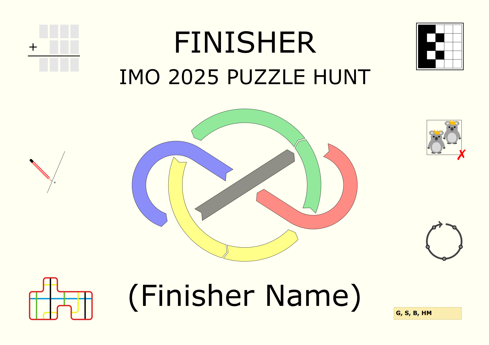

Wrap-Up
Firstly, thank you to all the IMO participants who had a go at the hunt! We hope it was at least somewhat rewarding, no matter how many puzzles you solved. It was certainly very exciting for us as organisers to see groups of contestants huddled around the hotel lobby working on the printed puzzle sets!
Congratulations to all thirteen teams that finished the hunt! In particular, special congratulations to:
- USA5’s Team, the first team to solve Animation and thus finish the hunt
- UNK4’s Team, the first team to solve all of the puzzles
- Each of the following teams for being the first to solve one of the puzzles:
- EST4’s Team with the first solve on Koala Kings
- GEO5’s Team with the first solve on My Windmill Has a Pencil
- MAS4’s Team with the first solves on Sudok-IMO: A Unique Performance, Tri-Alphametic and Venn-ary Encoding
- PHI4’s Team with the first solve on Circular Reasoning
- TWN3’s Team with the first solve on Decomposition
Some total stats:
- 33 teams solved at least one puzzle
- 13 teams solved the meta-puzzle, 12 of whom solved every puzzle, and a further 9 teams solved every puzzle except the meta-puzzle
- 363 answers were submitted*, out of which 218 were correct
(* Technically, guesses for the one partial phrase on the meta-puzzle were not counted to this total.)
The best answer guess for the meta-puzzle, Animation, goes to SVN3’s Team, who submitted I SOLVED IT.
In particular, the first five teams to finish the hunt received a specially designed trophy shaped like the answer to the meta-puzzle (that is, a BOOMERANG), and all members of finishing teams received a certificate containing references to each of the puzzles.
Click to show an example certificate

Design Process
The authors for this hunt were Norm Do, Ross Atkins, Hadyn Tang and Sean Gardiner. We had a number of meetings in the months leading up to the IMO (before every became busy with actual IMO organisation), with one key focus being making this puzzle hunt as approachable and accessible for people without great English skills and who had never seen a hunt puzzle before. We weren’t able to completely remove the knowledge for English completely, but some things we deliberately avoided were:
- No English-language wordplay (other than in puzzle titles as a hint: and make those as straightforward as reasonably possible)
- No references to Western-centric pop culture — the only allowable references are to things found on the official IMO website and mathematical concepts
- No unclued puzzle hunt conventions (such as indexing — I believe the only thing we really used was A1Z26 which was reasonably heavily clued)
As a result, there are a lot of puzzles with a heavy visual component or that are logic-based. Hopefully this meant we were at least somewhat successful with this goal. At the very least, teams with contestants from a wide variety of countries were able to solve at least one puzzle, which is a positive sign.
Personally, I (Hadyn) would be very interested in trying the solving part of this exercise in a different language! Specifically, if you are involved with IMO 2026, I'd be really interested if you could involve some Chinese hunt authors to set a puzzle hunt in the style of CCBC and other Chinese puzzle hunts.
Finally, a thank you to the members of ✈✈✈ Galactic Trendsetters ✈✈✈ who helped create gph-site! Organising this hunt would have been a massive failure if it hadn't been the case that gph-site was so easy to set up.